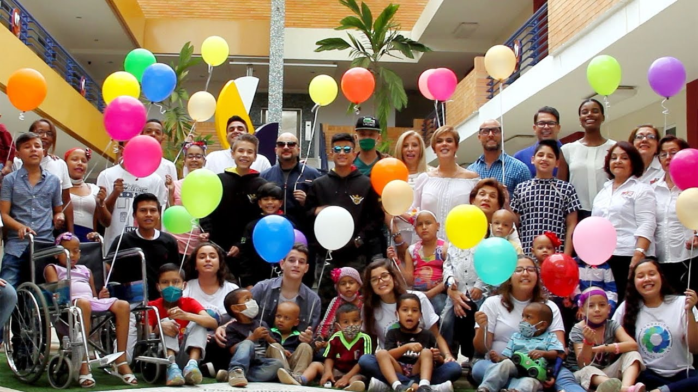
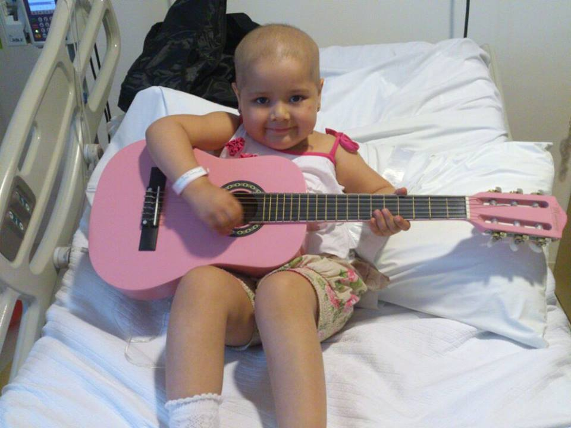

¡Haz tu donación!
Tienes diversas formas de colaborar con la Fundación. Hazte socio, dona tu celular, dona en línea o hazte voluntario aquí.

Manual para padres de niños Oncológicos
Descargue este manual de información básica sobre la enfermedad, tratamiento, cuidados en el hogar y manejo del impacto de la enfermedad.

Coronas de caridad
Entregue condolencias los deudos a través de nuestras tarjetas. Conozca los nuevos diseños.